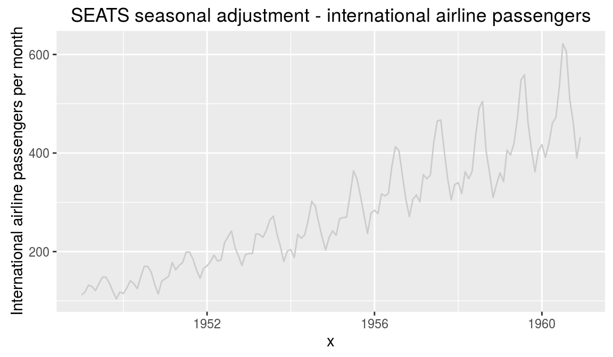
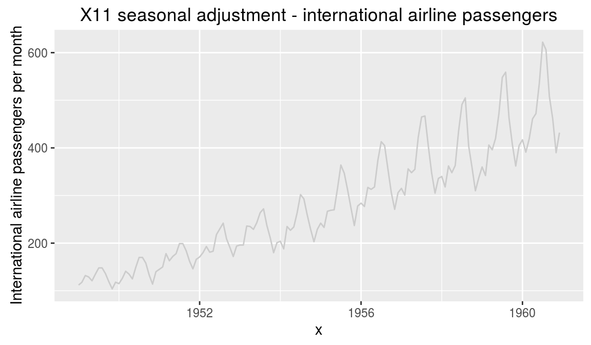
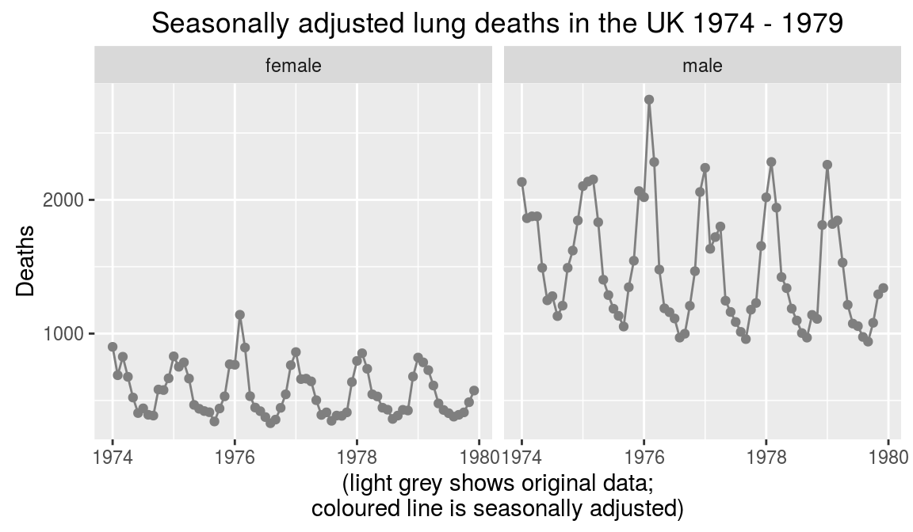
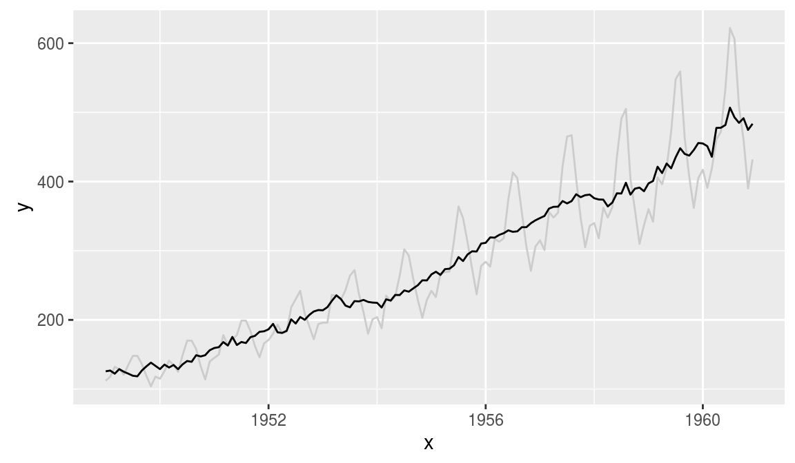
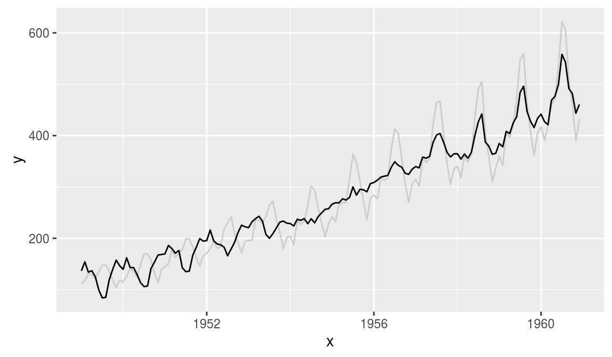
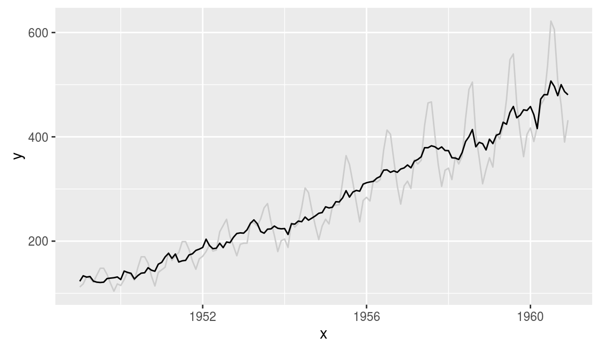

ggiraph
Make ggplot interactive
ggstance
Horizontal versions of ggplot2 geoms
ggalt
Extra coordinate systems, geoms & stats
ggforce
Accelarating ggplot2
ggrepel
Repel overlapping text labels
ggraph
Plot graph-like data structures
ggpmisc
Miscellaneous extensions to ggplot2
geomnet
Network visualizations in ggplot2
ggExtra
Marginal density plots or histograms
gganimate
Create easy animations with ggplot2
plotROC
Interactive ROC plots
ggthemes
ggplot themes and scales
ggspectra
Extensions for radiation spectra
ggnetwork
Geoms to plot networks with ggplot2
ggtech
ggplot2 tech themes, scales, and geoms
ggradar
radar charts with ggplot2
ggTimeSeries
Time series visualisations
ggtree
A phylogenetic tree viewer
ggseas
Seasonal adjustment on the fly
ggseas
https://github.com/ellisp/ggseas
Seasonal adjustment on the fly extension for ggplot2. Convenience functions that let you easily do seasonal adjustment on the fly with ggplot. Depends on the seasonal package to give you access to X13-SEATS-ARIMA.
# Example from https://github.com/ellisp/ggseas
library(ggplot2)
library(ggnet)
library(ggseas)Usage
So far there are three types of seasonal adjustment possible
X13-SEATS-ARIMA
# make demo data
ap_df <- data.frame(
x = as.numeric(time(AirPassengers)),
y = as.numeric(AirPassengers)
)
# SEATS with defaults
ggplot(ap_df, aes(x = x, y = y)) +
geom_line(colour = "grey80") +
stat_seas(start = c(1949, 1), frequency = 12) +
ggtitle("SEATS seasonal adjustment - international airline passengers") +
ylab("International airline passengers per month")
# X11 with no outlier treatment
ggplot(ap_df, aes(x = x, y = y)) +
geom_line(colour = "grey80") +
stat_seas(start = c(1949, 1), frequency = 12, x13_params = list(x11 = "", outlier = NULL)) +
ggtitle("X11 seasonal adjustment - international airline passengers") +
ylab("International airline passengers per month")
ggplot(ldeaths_df, aes(x = YearMon, y = deaths, colour = sex)) +
geom_point(colour = "grey50") +
geom_line(colour = "grey50") +
facet_wrap(~sex) +
stat_seas(start = c(1974, 1), frequency = 12, size = 2) +
ggtitle("Seasonally adjusted lung deaths in the UK 1974 - 1979") +
ylab("Deaths") +
xlab("(light grey shows original data;\ncoloured line is seasonally adjusted)") +
theme(legend.position = "none")
STL (LOESS-based decomposition)
# periodic if fixed seasonality; doesn't work well:
ggplot(ap_df, aes(x = x, y = y)) +
geom_line(colour = "grey80") +
stat_stl(frequency = 12, s.window = "periodic")
# seasonality varies a bit over time, works better:
ggplot(ap_df, aes(x = x, y = y)) +
geom_line(colour = "grey80") +
stat_stl(frequency = 12, s.window = 7)
Classical decomposition
# default additive decomposition (doesn't work well in this case!):
ggplot(ap_df, aes(x = x, y = y)) +
geom_line(colour = "grey80") +
stat_decomp(frequency = 12)
# multiplicative decomposition, more appropriate:
ggplot(ap_df, aes(x = x, y = y)) +
geom_line(colour = "grey80") +
stat_decomp(frequency = 12, type = "multiplicative")